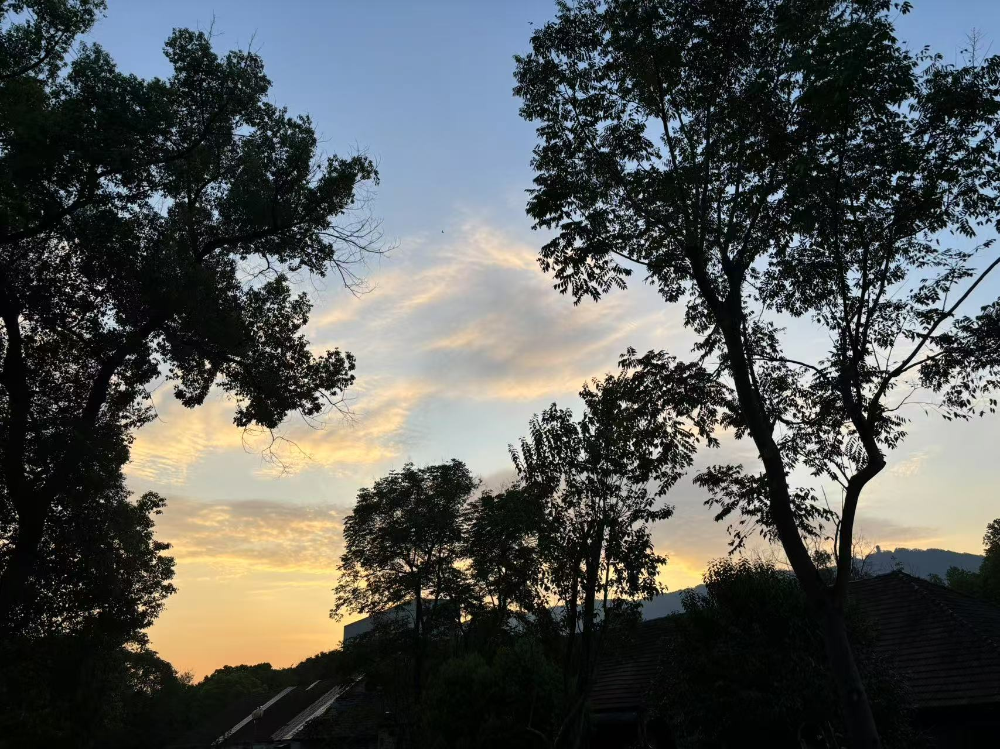
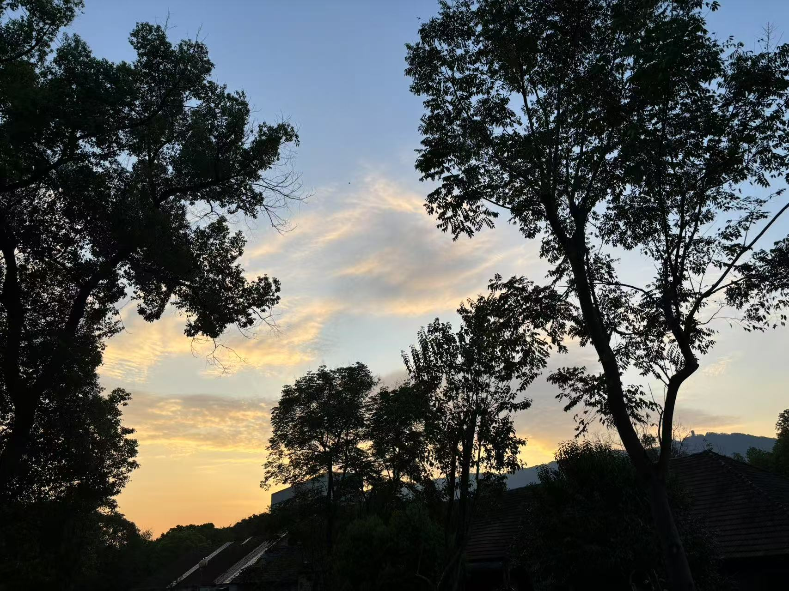

Hello：
欢迎来到我的个人简介页面
Welcome to my profile page.
个人简单介绍：
姓名：wtt
出生日期及地点：2005年8月，山东省济南市
就读学校：西南大学 (学校详情请看学校官网)
就读专业：智能科学与技术 （专业详情）
教育背景：将于2028年以本科生的身份毕业于西南大学
工作经验:暂无,目前仍在求学
大学总结：学习新知识，其中包括高中涉及过的，更多的包含专业课知识，学习这些让自己的知识储备更丰富，为将来的进一步发展奠定了基础；除了学习，空闲时间，见到了各种各样的美景，品尝到了很多美食，这些都是难忘的经历，它们共同组成了大学生活。
个人意愿：希望能通过四年的大学生生活增长自己的见识，能够系统深入地获取专业知识，为未来职业发展筑牢基础，空闲之余能够广泛涉猎其它领域的知识，从各方面提升自己的能力。
校园美景
 
